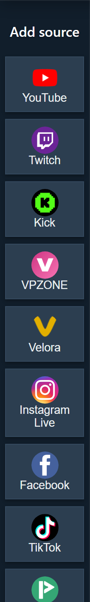

What The App Is For
The desktop app manages Social Stream source windows outside your normal browser. It can help with source organization and some browser-tab throttling problems. It is not the same as Chrome, and it does not automatically share your Chrome login or cookies.

Mode Names
Some sources have more than one connection mode. The right mode depends on the platform, login state, and whether you need richer events or simple page capture.

| Mode | Plain Meaning | Use When |
|---|---|---|
| Standard | The app opens a normal platform/source page and reads the rendered page. | You need the simplest visible page capture, login, or manual verification. |
| WebSocket/API | The source connects through a platform API, socket, or Social Stream source page. | The platform supports it and you want better background reliability or richer event data. |
| Compatibility/Legacy | An older connector kept as a fallback for when the newer one fails. | The newer connector fails or a platform-specific fallback is needed. |
| TikTok Auto | The app chooses the best TikTok path and may fall back if one fails. | You are not sure which TikTok mode to use. |
Use Standard Mode When
- The platform works when you can see the live page or popout chat.
- The site needs you to sign in, solve a prompt, or keep a visible chat panel open.
- You are comparing app behavior against the Chrome extension.
- You need the most familiar troubleshooting path: open page, see chat, test dock, then OBS.
Standard mode can still fail if the platform changes its page layout, blocks embedded/app browsers, asks for CAPTCHA, or hides chat behind a login.
Use WebSocket Or API Mode When
- The source specifically supports WebSocket/API mode.
- You want a source that can keep working better in the background.
- You need event families that normal page scraping may not expose.
- You can handle provider tokens, account permissions, API scopes, or source-page setup.
WebSocket/API mode is not always better. If auth, tokens, provider access, or a platform API is failing, Standard mode may be the faster test.
TikTok In The App
TikTok in the desktop app is not one single mode. Always note which preset is active before troubleshooting.
| TikTok Path | Use Case | Common Failure Point |
|---|---|---|
| Auto | First try for most users. | The app may fall back, so check the status text. |
| Standard | Visible TikTok page capture. | Login, CAPTCHA, redirected page, or hidden chat. |
| Local Signer | App-native reading and reply-support paths. | The app TikTok session/cookies must be valid. |
| Compatibility (WebSocket) | Older connector to try when Auto keeps missing chat. | Less rich than the preferred connector. |
| Proxy or custom signing | Advanced setups. | Provider availability, API key, room ID, or rate limits. |
For a normal first attempt, add TikTok, leave the preset on Auto, activate the source, and watch the app status text.
What To Check Before OBS
- Confirm the app source is activated.
- Confirm the source window is signed in if the platform needs login.
- Confirm the dock receives chat with the same session ID.
- Only after the dock works, add or refresh the OBS overlay URL.
- If Chrome works but the app does not, remember that app sessions and Chrome sessions are separate.
Common Fixes
- Chrome is logged in but the app is not: sign in to the platform inside the app source window or use the extension as the capture path.
- Source says active but no chat arrives: check the mode, source window, live URL/user name, and dock session.
- App is using the wrong source files: check whether the app is using packaged, cached, remote, beta, stable, or local Social Stream assets.
- TikTok fails: record the current preset, status text, app version, and whether the source switched to a fallback mode.
- OBS is blank: test the dock first. If the dock is empty, OBS is not the problem yet.
Related guide: Platform Setup Picker.